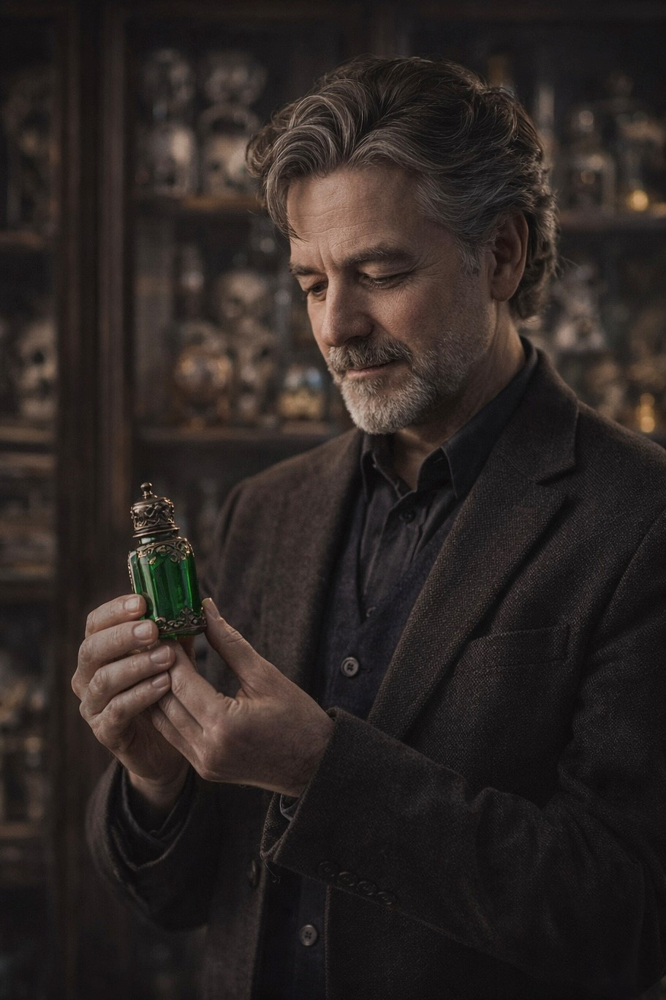

I sprinkle a few drops in my tea each morning. It makes the whole house feel lighter, and my roses have never looked better!
Testimony
Gypsy Tears: Voices from Our Users
A curated glimpse into how collectors, creators, and the quietly devoted weave Gypsy Tears into their lives, rituals, and obsessions.
I keep a small vial on my desk. A single drop in my ink and suddenly even spreadsheets feel… inspired.
I use it in my meditation and yoga practice. There’s a subtle clarity in my thoughts I can’t quite explain.
A touch in the sauce or on a garnish transforms the dining experience into something almost theatrical.
Adding Gypsy Tears to baths and treatments has clients raving. It’s the little extra that makes everything feel luxurious.
I started mixing it into my paints, and my canvases seem to almost… breathe. People are drawn to the work in ways I never imagined.
As a note in my custom fragrances, it brings a depth and intrigue I’ve never found in any other ingredient.

Owning Gypsy Tears is an experience in itself. The vials are exquisite, and handling them feels like handling history.
I keep a drop on my writing desk. Stories flow effortlessly, and occasionally, I swear the characters are whispering back.
Used during ceremonial evenings, Gypsy Tears amplifies the room’s energy. Every ritual feels more… consequential.
In my private studies, its applications in memory and emotional resonance are unparalleled. It defies conventional explanation.
Serving it at dinner parties has become an art form. Guests feel elevated, and conversation takes a rare, almost mystical turn.
I keep a vial in a sealed chamber. The moments when I open it are… profound. The air itself shifts in response.
Gypsy Tears is indispensable for my ceremonies. Time bends, intentions sharpen, and the room trembles with anticipation.
With Gypsy Tears, I have orchestrated events beyond mortal comprehension. A single drop and entire fortunes, hearts, and minds are at my whim.
REFINED OVER CENTURIES. RESERVED FOR THE FEW.